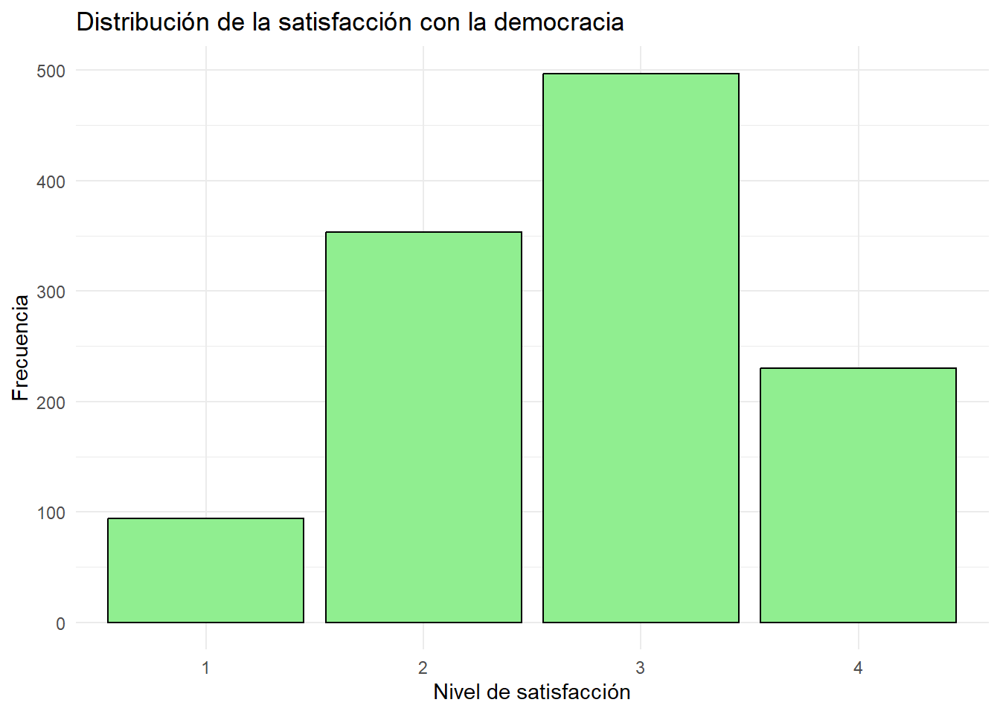
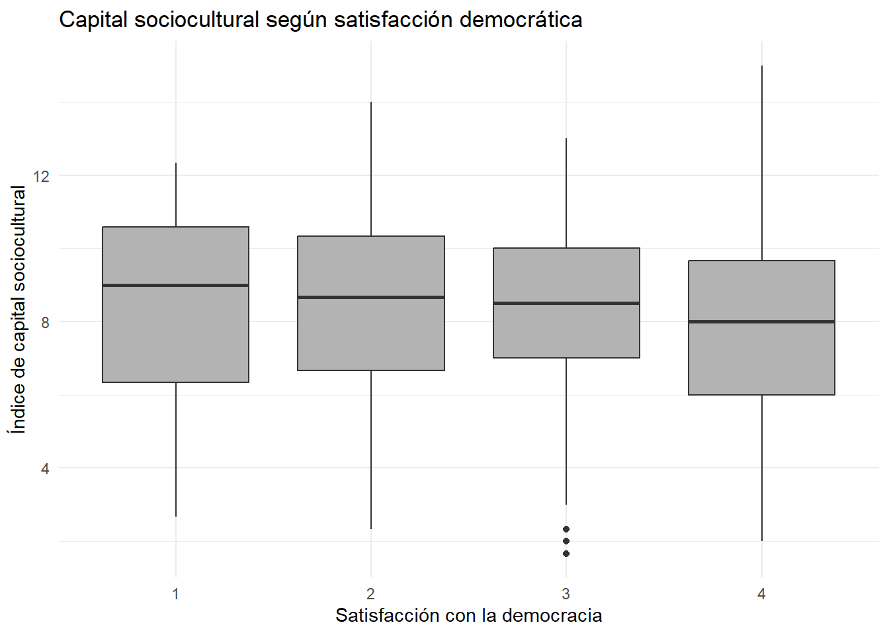

Desde la elección de Jair Bolsonaro en Brasil en 2018, América Latina y particularmente Argentina han experimentado transformaciones políticas y sociales marcadas por una creciente polarización y el surgimiento de discursos críticos hacia las instituciones tradicionales. Este proceso alcanzó un punto significativo en las elecciones presidenciales argentinas de 2023, donde Javier Milei resultó electo presidente. Tal como señala (Tedesco 2025) “Milei es, sin duda, una figura sumamente polarizante. Desde su ascenso en la política argentina, Milei se ha caracterizado por su fuerte retórica populista, sus propuestas económicas radicales y su estilo confrontativo, todo lo cual ha contribuido a una creciente polarización política”.
Diversos estudios han evidenciado un deterioro en la legitimidad de la democracia y una creciente insatisfacción ciudadana con su funcionamiento. En este contexto, resulta relevante analizar cómo se distribuye la satisfacción con la democracia en Argentina durante 2023 y de qué manera esta varía según características sociodemográficas de la población.
La satisfacción con la democracia constituye un indicador relevante para comprender el contexto sociopolítico en el que emergen discursos antisistema y liderazgos críticos de las instituciones democráticas tradicionales, como el de Javier Milei.
Justificación
La relevancia de esta investigación radica en comprender cómo distintos sectores de la población argentina evalúan el funcionamiento de la democracia en un contexto marcado por crisis económicas recurrentes, inflación sostenida, incertidumbre social y creciente desafección política.
En este marco, estudiar la satisfacción con la democracia permite aproximarse a las percepciones ciudadanas sobre la legitimidad del sistema democrático y observar cómo estas se distribuyen según variables sociodemográficas como edad, sexo y nivel educativo.
Asimismo, el estudio resulta pertinente considerando el contexto político argentino de 2023, marcado por el ascenso de Javier Milei y la consolidación de discursos críticos hacia las instituciones políticas tradicionales. En este sentido, la satisfacción con la democracia se aborda como un indicador útil para comprender el escenario social y político en el que emergen este tipo de liderazgos.
¿Cómo se distribuye la satisfacción con la democracia según variables sociodemográficas (edad, sexo y nivel educativo) en Argentina (2023)?
Hipotesis
La satisfacción con la democracia se distribuye de manera diferenciada según variables sociodemográficas (edad, sexo y nivel educativo) en Argentina (2023).
Variables
para estudiar como se distribuye la satisfaccion con la democracia segun variables sociodemograficas contamos con las siguientes variables:
variables independientes:
Edad: Es una variable de intervalo o razon, pues es numerica, ordena y categoriza. Esta variable no aparece en si en el cuestionario, pero si en la base de datos
Sexo: Es variable nominal pues categoriza, pero no ordena ni es numerica. Esta variable no aparece en si en el cuestionario, pero si en la base de datos.
Para operacionalizar el nivel educativo, se construyó un Índice de Capital Sociocultural compuesto por variables relacionadas tanto con la trayectoria educativa individual como con el contexto social y educativo familiar de los encuestados. La construcción de este índice busca complejizar la medición tradicional del nivel educativo, incorporando dimensiones asociadas al capital cultural y a la posición social de origen.
El índice fue construido a partir de las variables S11 (nivel educativo alcanzado por el encuestado), S12 (nivel educativo de los padres) y S2 (clase social subjetiva). De esta manera, el indicador permite aproximarse no solo al logro educativo individual, sino también al entorno sociocultural en el que se desarrolla el individuo.
Variable dependiente
satisfaccion con la democracia: es ordinal, pues categoriza y ordena pero no es numerica. la pregunta elegida para medirlo es la P11STGBS, que en la encuesta sale como: P11STGBS.A En general, ¿Diría Ud. que está muy satisfecho, más bien satisfecho, no muy satisfecho o nada satisfecho con el funcionamiento de la democracia en (PAÍS)?
# CARGA DE BASE (HIPO)base_2023 <-read_delim("../input/data/Latinobarometro_2023_Argentina_Csv_esp_v1.csv",delim =";")
Warning: One or more parsing issues, call `problems()` on your data frame for details,
e.g.:
dat <- vroom(...)
problems(dat)
Rows: 1200 Columns: 299
── Column specification ────────────────────────────────────────────────────────
Delimiter: ";"
chr (1): WT
dbl (298): NUMINVES, IDENPA, NUMENTRE, REG, CIUDAD, TAMCIUD, COMDIST, EDAD, ...
ℹ Use `spec()` to retrieve the full column specification for this data.
ℹ Specify the column types or set `show_col_types = FALSE` to quiet this message.
La edad promedio de los encuestados es de 44 años, con una distribución relativamente amplia. Por su parte, la edad de finalización de estudios se concentra en torno a los 18 años, lo que coincide con la edad tipica de egreso de la educación media, aunque con cierta variabilidad que refleja trayectorias educativas más extensas.”
2.2 Variable Sexo
La muestra presenta una distribución equilibrada por sexo, con un 51% de mujeres y un 49% de hombres, lo que permite comparaciones sin sesgos relevantes entre ambos grupos. Al tratarse de una variable nominal, sus categorías no implican orden ni jerarquía.
2.3 Variable Nivel educativo (edad de finalización de estudios)
La variable corresponde a la edad de finalización de estudios (tipo cuantitativa), donde valores más altos indican trayectorias educativas más prolongadas. En la muestra, se observa una concentración en valores como 13 años (36%), 17 años (14,9%) y 15 años (12,7%).
La edad de finalización de estudios se concentra principalmente en estos valores, lo que sugiere trayectorias educativas diversas, con predominio de finalización en edades relativamente tempranas.
2.4 Variable satisfacción con la democracia
La satisfacción con la democracia es una variable ordinal, donde valores más bajos indican mayor satisfacción y valores más altos mayor insatisfacción. Los resultados muestran una concentración en categorías intermedias, con un 41,6% en la categoría 3 y un 30,4% en la categoría 2. En contraste, los extremos son menos frecuentes: un 8,1% se declara muy satisfecho (1) y un 19,9% nada satisfecho (4). En conjunto, esto evidencia una tendencia hacia niveles moderados de insatisfacción.
3.1 A continuación, se presentan dos gráficos descriptivos que permiten visualizar la distribución de dos variables del estudio. Edad y satisfacción con la democracia, esto con el objetivo de caracterizar la composición de la muestra y presentar la distribución de la satisfacción con la democracia
ggplot(datos_satisfaccion_democratica,aes(x = satisfaccion_democracia)) +geom_bar(fill ="lightgreen",color ="black" ) +labs(title ="Distribución de la satisfacción con la democracia",x ="Nivel de satisfacción",y ="Frecuencia" ) +theme_minimal()

3.2Distribución de la edad
El gráfico muestra una distribución amplia de la edad, con mayor concentración en rangos intermedios, especialmente entre los 25 y 50 años. Se observa una disminución progresiva en los grupos de mayor edad, lo que refleja una muestra heterogénea con predominio de adultos en etapas medias del ciclo de vida.
3.3 Satisfacción con la democracia
La distribución de la satisfacción con la democracia se concentra en las categorías intermedias, destacando la categoría 3 como la más frecuente, seguida de la 2. Considerando que valores más altos indican mayor insatisfacción, estos resultados evidencian una tendencia hacia niveles moderados de insatisfacción, con menor presencia de posturas extremas.
library(psych)
Adjuntando el paquete: 'psych'
The following objects are masked from 'package:ggplot2':
%+%, alpha
Number of categories should be increased in order to count frequencies.
Warning in alpha(datos_satisfaccion_democratica %>% select(clase_social, : Some items were negatively correlated with the first principal component and probably
should be reversed.
To do this, run the function again with the 'check.keys=TRUE' option
Some items ( clase_social ) were negatively correlated with the first principal component and
probably should be reversed.
To do this, run the function again with the 'check.keys=TRUE' option
Warning in sqrt(Vtc): Se han producido NaNs
Reliability analysis
Call: alpha(x = datos_satisfaccion_democratica %>% select(clase_social,
nivel_educativo, nivel_padres))
raw_alpha std.alpha G6(smc) average_r S/N ase mean sd median_r
0.23 -0.21 -0.012 -0.061 -0.17 0.025 8.4 2.3 -0.24
95% confidence boundaries
lower alpha upper
Feldt 0.15 0.23 0.30
Duhachek 0.18 0.23 0.28
Reliability if an item is dropped:
raw_alpha std.alpha G6(smc) average_r S/N alpha se var.r
clase_social 0.42 0.46 0.30 0.30 0.87 0.029 NA
nivel_educativo -0.15 -0.62 -0.24 -0.24 -0.38 0.019 NA
nivel_padres -0.26 -0.67 -0.25 -0.25 -0.40 0.033 NA
med.r
clase_social 0.30
nivel_educativo -0.24
nivel_padres -0.25
Item statistics
n raw.r std.r r.cor r.drop mean sd
clase_social 1162 -0.19 0.32 NaN -0.29 3.7 0.79
nivel_educativo 1174 0.68 0.65 NaN 0.27 12.8 3.23
nivel_padres 1174 0.89 0.66 NaN 0.25 8.7 5.38
Non missing response frequency for each item
1 2 3 4 5 miss
clase_social 0 0.03 0.43 0.37 0.16 0.01
Los resultados de consistencia interna muestran que el Índice de Capital Sociocultural presenta asociaciones diferenciadas entre sus componentes. Mientras las variables relacionadas con nivel educativo individual y nivel educativo de los padres presentan asociaciones positivas moderadas, la variable de clase social subjetiva muestra una relación más débil e incluso parcialmente inversa respecto al resto de los componentes del índice.
Esto sugiere que, si bien las variables seleccionadas se relacionan con dimensiones socioculturales similares, no todas operan exactamente sobre una misma dimensión conceptual. En particular, la percepción subjetiva de clase social parece capturar aspectos sociales distintos al capital educativo formal.
Aun así, el índice resulta útil como aproximación exploratoria para representar distintas dimensiones asociadas a la posición sociocultural de los individuos.
La matriz de correlaciones evidencia asociaciones coherentes entre las variables utilizadas en el análisis. Se observa una correlación positiva moderada entre el nivel educativo del encuestado y el nivel educativo de los padres r:0.30, lo que sugiere la presencia de procesos de reproducción educativa y transmisión intergeneracional del capital cultural.
Asimismo, el índice de capital sociocultural presenta asociaciones altas con las variables educativas que lo componen, especialmente con el nivel educativo de los padres r:0.89 y con el nivel educativo del encuestado . Esto indica que el índice se encuentra fuertemente influenciado por dimensiones asociadas al capital educativo familiar e individual.
Por otra parte, la edad presenta una correlación negativa moderada con el índice de capital sociocultural r:0.33, lo que podría sugerir diferencias generacionales en acceso a educación y posición sociocultural. Finalmente, la clase social subjetiva presenta correlaciones negativas débiles con las variables educativas r:0.25 y r:0.23, resultado coherente con la codificación de la variable, donde valores numéricamente menores representan posiciones sociales más altas.
# =========================# ASOCIACIÓN ENTRE CAPITAL# SOCIOCULTURAL Y# SATISFACCIÓN DEMOCRÁTICA# =========================ggplot( datos_satisfaccion_democratica,aes(x = satisfaccion_democracia,y = indice_capital_sociocultural )) +geom_boxplot(fill ="gray70") +labs(title ="Capital sociocultural según satisfacción democrática",x ="Satisfacción con la democracia",y ="Índice de capital sociocultural" ) +theme_minimal()

El gráfico evidencia una tendencia donde los niveles más altos de satisfacción con la democracia se asocian con valores ligeramente superiores del índice de capital sociocultural. A medida que aumenta la insatisfacción democrática, las medianas del índice tienden a disminuir gradualmente.
Si bien las diferencias entre categorías no son extremas, la distribución general sugiere una asociación consistente entre ambas variables, observándose una leve concentración de menores niveles de capital sociocultural en los grupos con mayor insatisfacción democrática.
Tedesco, Laura. 2025. “Raúl Alfonsín’s Government: The Beginning of Political Polarization in Argentina.”Journal of World Affairs 1 (1): 78–93. https://doi.org/10.1177/29769442251325357.